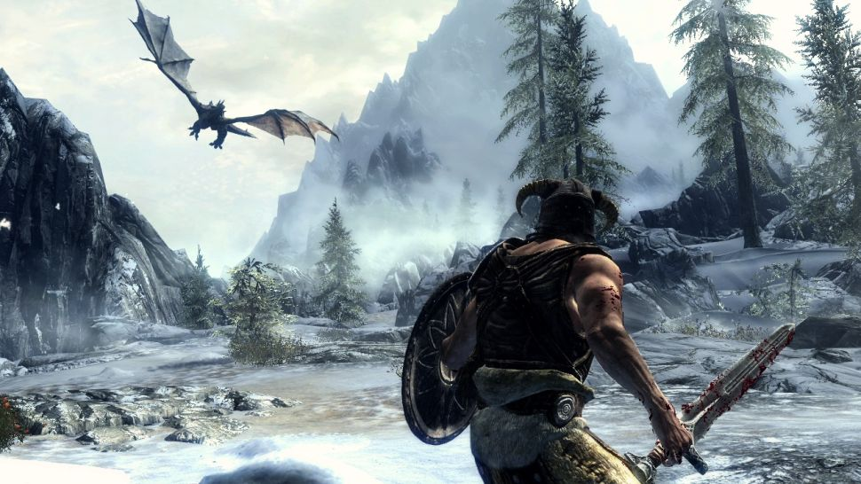
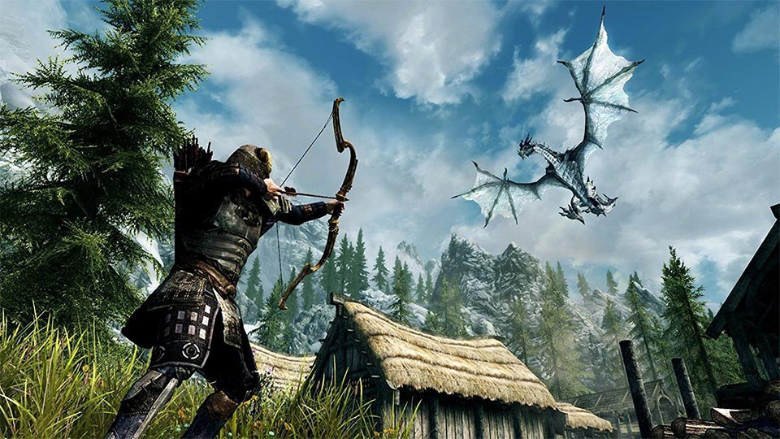

Skyrim cheats:
If you're looking for Skyrim cheats, then we've got every Skyrim console command to fully customise your experience
(Image credit: Bethesda)
If you're growing accustomed to the usual surroundings in Tamriel after so many years of adventuring, then trying out some Skyrim cheats may be just what you need to freshen things up again. Fancy learning every spell, perk, and skill with a couple of easy commands? Or exploring an area of Skyrim that you could never get to through legitimate means? If you're a PC player then those options and many more are at your fingertips, as we've got all the Skyrim console commands you could need to become the ultimate Dragonborn, and these should help keep you occupied until the eventual arrival of Elder Scrolls 6. Unfortunately for those playing on console, there aren't any Skyrim cheats available for you, but at least if you visit these Skyrim hidden chest locations you can grab some decent loot.
(Image credit: Bethesda)
How to use Skyrim console commands
As with many other PC games, entering Skyrim console commands is simply a case of pressing the tilde (~) key to open up the developer console, then typing in the command code in the correct format. You can enter multiple codes to stack up various different effects, then hit tilde once again to return to the game and reap the ill-gotten rewards you've given yourself. Unless otherwise stated, entering the same code a second time should turn it off again.
This may sound obvious, but it's worth reinforcing that using some of these codes (especially in combination with others) can cause glitches, mess up ongoing storylines, or crash your game entirely, so make sure you create a back up save and keep it separate before you start playing around - otherwise you may find you've permanently broken your progress, and nobody wants to deal with that in a game the size of Skyrim. Also, achievements will be disabled as soon as you start entering these codes, so unfortunately you won't be able to cheat your way to completing any challenges.
(Image credit: Bethesda)
Player Skyrim console commands
tgm
God mode: Full invincibility, infinite stamina and magicka
tim
Immortal mode: Similar to God mode, you can take damage but can't be killed
tcl
No-clip mode: Walk through walls, fly
showracemenu
Access the character creator to change appearance (this will reset your level and skill progress)
player.resethealth
Immediately refills your health
psb
Learn every magic spell
player.advlevel
Increase player level by one, though you won't get a perk point
player.setlevel #
Replace # with the level to set your player to
player.setscale #
Replace # with the height for your character, between 0.1 and 10
advskill SkillID #
Replace SkillID with the skill you're modifying and # with the amount you are modifying it by. A list of SkillIDs is here
addshout ShoutID
Replace ShoutID with the shout you want to add. A list of ShoutIDs is here
player.addperk PerkID
Replace PerkID with the perk you want to add. A list of PerkIDs is here
player.additem ItemID #
Replace ItemID with the item you want to add to your inventory, and # with the amount of that item to add. A list of ItemIDs is here
unlock
Point at a door or chest then use this code to unlock it
(Image credit: Bethesda)
World Skyrim console commands
tmm #
Toggle map markers, replace # with 0 to disable all or 1 to enable all
tfc
Free camera mode, add 1 to pause the game
sucsm #
Replace # to change the speed of the free camera i.e. 0.5 for half speed or 2 for double speed
tfow
Remove fog from the world map
tg
Turn off grass
ts
Turn off skybox and fog
tt
Turn off trees
tws
Turn off water (when not underwater)
set timescale to #
Replace # to set the rate time passes at, 1 is realtime and 20 is default
sgtm #
Replace # to set the game speed i.e. 0.5 for half speed or 2 for double speed
fw WeatherID
Replace WeatherID with the type of weather you want to instantly activate. A list of WeatherIDs is here
sw WeatherID
Replace WeatherID with the type of weather you want to gradually activate
(Image credit: Bethesda)
Quest Skyrim console commands
caqs
Completes all primary quest stages (may cause crashes)
saq
Starts all quests (may cause crashes)
sqo
Shows all objectives for ongoing quests
sqt
Shows all targets for ongoing quests
showquesttargets
Displays the QuestID for all current quests
player.sqs QuestID
Shows all stages for the entered QuestID
movetoqt QuestID
Move to the target of the entered QuestID
completequest QuestID
Completes quest with the entered QuestID
resetquest QuestID
Resets quest with the entered QuestID
(Image credit: Bethesda)
NPC Skyrim console commands
tdetect
Turn off AI detection while stealing, doesn't work for pickpocketing
tai
Turns off non-combat AI for NPCs
tcai
Turns off combat AI for NPCs
sexchange
Changes gender of targeted NPC (or yourself if not targeting)
tc
Allows you to take control of the targeted NPC
kill
Kill the targeted NPC
killall
Kills all non-essential NPCs in the area
resurrect
Bring a dead targeted NPC back to life, add 1 to keep their current items intact
player.placeatme NPCID
Places the stated NPC next to you. A list of NPCIDs is here